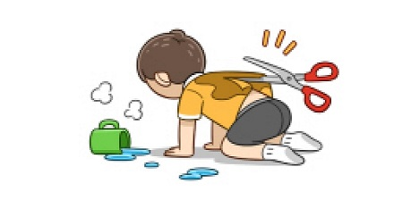
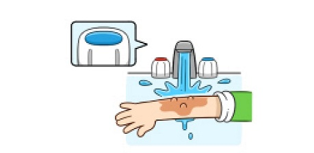
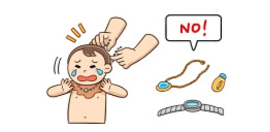
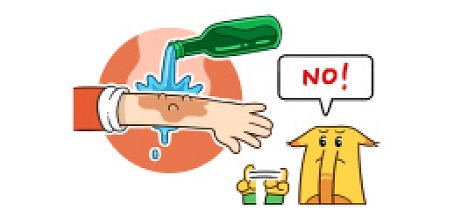

1.뜨거운 물에 젖은 옷은 가위로 제거하기
 접촉 시간이 길어질수록 손상이 심해집니다.
옷은 벗기려 하지 말고 가위로 제거하는 것이 열과의 접촉 시간을 줄여주어 손상이 심해지는 것을 예방할 수 있습니다.2.차가운 물로 화상 부위를 충분히 식히기
 흐르는 물에 15~20분 정도 식히는 것이 좋습니다.
화상 부위가 넓은 경우에는 저체온증에 빠질 수 있으므로 몸 전체를 담그지 말고 흐르는 물을 고르게 뿌려 식힙니다.3.화상부위를 식힌 후 조이는 옷이나 장신구는 제거하기
 금속의 장신구는 열을 가지고 있어 화상을 깊어지게 합니다.
화상을 입고 나면 부종이 생기므로 조이는 장신구 등을 제거하지 않으면 혈액순환에 방해가 됩니다.
전기에 의한 화상의 경우 플러그를 뽑거나 전류를 차단합니다. 전기와 접촉된 상태의 사람을 만지면 위험합니다.4.소주, 치약, 연고 등은 화상을 악화시킬 수 있으므로 바르지 않기
 민간요법은 화상 상처에 효과가 있다고 증명된 바가 없고, 오히려 상처에 좋지 않은 영향을 미칠 수 있습니다.
연고를 바르면 병원에서 연고를 닦아내기 위해 많은 시간을 소비하게 됩니다.5.깨끗한 천이나 붕대로 화상부위를 감싼 후 병원에 방문하기
붕대는 너무 조이지 않게 감아야 합니다. 압박이 강한 경우에는 혈액 순환이 잘 되지 않아 상처가 깊어질 수 있으니 사용에 주의를 요합니다.
화상을 입은 경우에는 병원을 방문하여 전문가의 조언을 들어야 합니다.
잘못된 드레싱으로 화상 상처에 감염이 생기거나, 화상이 깊어지면 치료 기간이 길어지고 그만큼 흉터를 더 많이 남기게 됩니다.

화상정보